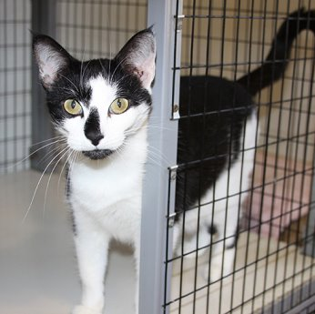

Personas
- Cat lover — A 40-year-old woman living in Soda Springs, Idaho, bookmarks the home page of our site. Every time she opens her browser, she gets a new image of a cute cate the current weather conditions.
- Local businesses — A local business in Fish Haven, Idaho, that can't afford the fees charged by larger websites can advertise here for the minimal price of a contribution to a local pet adoption agency.
- Cat shelters — A cat shelter in Prescot, Idaho, needs to find "Forever Homes™" for the animals in its care. Our site offers a place to introduce the cats and share their stories.

Scenarios
- Cat and kitten photos — Firstly, we want to celebrate our local cats and the people who care for them. Visit our gallery for pictures of cute kittens and cats, some waiting to be adopted right now.
- Weather reports — Keeping our local community informed of their current weather conditions.
- Local events — WeatherCat aggregates local weather news and community events.
- Merch — Can't wait to get our logo on a t-shirt or mug? Head on over to our store.
- Fundraising — Sales of WeatherCat merchandise benefits local cat shelters and pet adoption agencies.